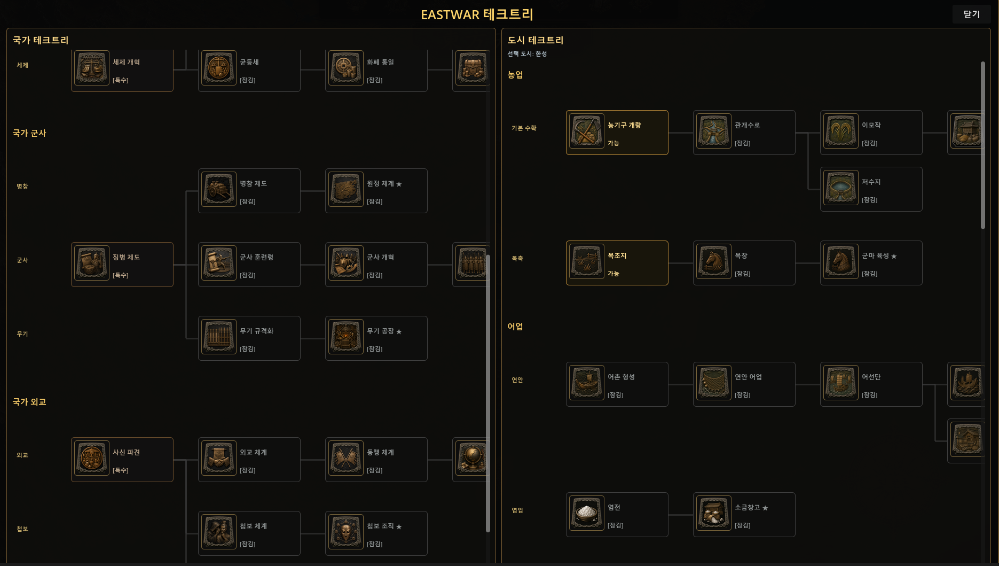

23개의 조용한 폭탄
테크트리 충돌에서 시작된 전체 구조 감사
2026년 09월 03일자꾸 짜부라지는 화면
테크트리 창을 다듬다가, 창이 자꾸 이상하게 나오는 버그를 만났다. 상세정보 영역이 원래 받아야 할 공간의 절반, 혹은 그 이하로 짜부라지는 현상이었다. 도시를 계속 바꿔가며 테스트할 때마다 반복됐다.
원인을 파고들자 명확한 그림이 나왔다. content_root라는 UI 노드 하나를, 서로의 존재를 전혀 모르는 두 스크립트가 동시에 건드리고 있었다.
worldmap_main.gd의_refresh_domestic_tech_tree_overlay_mvp()— 도시 선택이 바뀔 때마다 이 노드를 통째로 비우고 처음부터 재생성한다. header_row → split(국가/도시 트리) → inspector(상세정보) 순서로, 원래 설계된 정상 레이아웃이다.worldmap_tech_tree_split_detail_test_controller.gd의_process()— 매 프레임 돌면서, 위에서 만들어진 split과 inspector를 몰래 떼어내 42%/58% 비율로 다시 감싼다.
문제는 이 둘이 서로를 몰랐다는 것. 도시를 클릭해서 1번이 다시 실행되면 content_root를 비우는데, 이 순간 2번이 만들어둔 노드는 queue_free()로 "삭제 예약"만 된 채 그 프레임엔 아직 트리에 남아 있다. 그 상태에서 1번이 새 노드를 바로 추가해버리면, 찰나의 순간 동안 화면 안에 공간을 나눠 가지려는 노드가 두 세트나 존재하게 된다. VBoxContainer는 그 노드들끼리 남은 공간을 반씩 나눠주니, 상세정보 영역이 짜부라지는 게 당연한 결과였다.
방 하나, 두 사람
이 상황을 비유로 정리하면 이랬다. 방 하나를 두 사람이 각자 따로 정리하고 있다. 한 사람(A)은 손님이 바뀔 때마다 방을 통째로 비우고 가구를 처음부터 다시 놓는 사람이고, 다른 한 사람(B)은 그 뒤를 몰래 따라다니며 A가 놓은 가구를 42:58 비율로 더 예쁘게 재배치하는 사람이다. A와 B는 서로의 존재를 몰랐다. A가 방을 비우는 찰나에 B가 방금 재배치해둔 가구가 아직 완전히 안 치워진 채 남아 있고, 거기다 A가 새 가구를 또 들여놓으면, 그 짧은 순간 방 안엔 공간을 나눠 가지려는 가구 세트가 두 개 존재하게 된다. 그래서 어느 쪽도 제대로 자리를 못 잡고 구석에 짜부라졌다.

고치는 방법은 세 단계로 정리됐다.
- 처음부터 완성된 모습으로 짓기 — B를 따로 두지 않고, A가 애초에 "42:58로 나뉜 완성된 방"을 한 번에 만들도록 바꾼다.
- B가 알던 규칙도 같이 가져오기 — B는 단순히 가구만 재배치한 게 아니라 "국가 얘기면 왼쪽, 도시 얘기면 오른쪽"이라는 규칙도 갖고 있었다. 이 규칙을 놓치면 화면은 안 짜부라지는데 이번엔 그 기능 자체가 사라진다. 그래서 이 규칙까지 반드시 A에게 넘겨야 했다.
- 이제 필요 없어진 B와의 계약을 정리하기 — 1, 2번이 끝나면 B는 더 이상 손댈 게 없어져서 자연히 손을 놓는다. 그래도 파일은 남아있으니, 헷갈리지 않도록 정식으로 정리하는 마지막 단계다.
이게 여기만의 문제일까
버그를 고치다가 문득 궁금해졌다. 혹시 이런 패턴이 다른 곳에도 더 있는 게 아닐까. 그래서 scripts/worldmap/ui/ 폴더 전체를 스캔했다.
test_controller류 스크립트가 23개 존재했다. 그중 "_process()로 매 프레임 폴링하면서 worldmap_main.gd가 만든 남의 노드를 직접 찾아가 건드리는" 정확히 동일한 패턴을 쓰는 스크립트가 테크트리 것 말고 2개 더 있었다 — 주둔군 카드를 건드리는 것 하나, 좌우 HUD 패널과 재상·태수 카드를 건드리는 것 하나.
다행히 지금 당장 터진 건 테크트리 하나뿐이었다. 이유는 명확했다 — worldmap_main.gd 전체에서 "자식 노드를 통째로 지우고 처음부터 재생성"하는 파괴적 함수는 테크트리 전용 함수 딱 하나뿐이었다. 나머지 둘이 건드리는 대상(주둔군 카드, HUD 패널)은 값만 갱신할 뿐 노드를 지우고 다시 만들지는 않는다. 그래서 지금은 같은 버그가 안 터진다.
하지만 구조 자체는 셋 다 동일하게 위태롭다는 게 핵심이었다. "파괴적 재생성"과 "외부 폴링 패치", 이 두 조건이 겹쳐야 버그가 터지는데, 지금은 우연히 테크트리에서만 두 조건이 겹친 것뿐이다. 나머지 둘도 나중에 "통째로 재생성" 방식으로 바뀌는 순간, 똑같은 충돌이 재발할 수 있다.
세 단계 대응
1단계 — 지금 터진 것부터. 별도 컨트롤러의 사후 재포장 구조를 제거하고, 최종 42:58 레이아웃을 worldmap_main.gd의 소유 함수 안으로 직접 통합했다. 국가 상세와 도시 상세를 분리하고, 워터마크를 조건부로 넣고, 재생성 시 즉시 detach 후 queue_free 하도록 정리했다.
2단계 — 위험한 나머지 둘 감사. 여기서는 무턱대고 코드부터 옮기지 않았다. _process()가 정확히 무엇을 찾는지, 어떤 노드를 직접 수정하는지, 지금 main 쪽에서 그 노드를 재생성하는지, 이미 기능이 안정화됐는지를 먼저 판정했다. 판정 결과에 따라 세 갈래로 나누기로 했다 — 안전하지만 임시 패치인 것은 유지하되 위험을 기록해두고, 안정화가 끝나 본체 승격이 적절한 것은 정식 코드로 통합하고, 위험한 폴링 구조는 signal 방식이나 소유 함수 통합으로 바꾼다.
3단계 — 재발 방지 규칙을 문서에 박기. 이번 버그에서 제일 값진 수확은 사실 이 규칙이다.
파괴적으로(clear+rebuild) 재생성되는 UI 서브트리는, 외부에서
_process()로 폴링하며 건드리는 별도 컨트롤러의 대상이 되면 안 된다. 반드시 (a) 소유 함수에 로직을 직접 합치거나, (b) 재생성 완료 후 Signal을 emit하고 외부 스크립트는 그 Signal을 받을 때만 1회성으로 반응하는 방식으로 가야 한다.
새 test_controller가 추가될 때마다, _process() 안에서 어떤 노드를 찾아가는지 목록화하고, worldmap_main.gd에 그 노드를 지우고 재생성하는 함수가 있는지 교차 확인하는 스캔을 검증 루틴에 넣기로 했다. 장기적으로는, 이미 안정화되어 더 이상 변경이 없는 test_controller들을 주기적으로 본체나 정식 시스템 파일로 승격시켜, "test_controller" 딱지가 붙은 임시 패치 파일 수 자체를 관리하기로 했다.
이번 정리의 목표는 23개를 전부 본체로 옮기는 게 아니었다. 23개를 전부 감사하고, 실제로 위험하거나 승격할 가치가 있는 것만 손대는 것 — 이 선을 분명히 그어뒀다.
브랜치도 같이 정리했다
버그를 고치던 중에 또 하나 눈에 들어온 게 있었다. 지금 진행 중인 두 개의 큰 작업 — 지도 화면 개편과 전투 이동 방식 실험 — 이 서로 아무 상관도 없는데 같은 브랜치 안에 섞여 들어가 있었다. 이대로면 "이 작업만 먼저 확정하고 싶다"는 선택 자체가 불가능한 상태였다.
그래서 브랜치를 완전히 분리했다. main을 기준점으로 잡고, 원본의 최종 파일 상태를 경로별로 나눠 옮기면서 원본 브랜치는 그대로 보존했다. 결과는 이렇게 갈렸다.
- WorldMap →
feature/worldmap-territory-techtree-hud(106개 파일) - Battle Iso →
feature/battle-iso-movement(23개 파일) - AI Workflow Docs →
docs/ai-implementation-workflow(2개 파일) - Hero Cutin Perf →
perf/hero-cutin-registry-cache(1개 파일)
WorldMap과 Battle Iso 사이의 파일 겹침은 0개로 확인됐다.
오늘 한 일을 한 줄로
게임 화면 하나가 자꾸 이상하게 나오는 버그를 고치고 있었다. 알고 보니 원인은, 두 개의 다른 코드가 서로의 존재를 모른 채 같은 화면을 동시에 건드리고 있었던 것. 그 버그를 고치다가 "혹시 다른 데도 있는 거 아니야?"라는 질문이 떠올랐고, 실제로 코드 전체를 뒤져 비슷한 패턴 두 개를 더 찾았다. 그러다 보니 지금 하고 있는 두 작업이 애초에 같은 브랜치에 섞여 있었다는 것도 눈에 들어왔다. 화면 버그 하나를 고치다가, 그동안 일해온 방식 자체에 정리가 필요하다는 걸 알아챈 하루였다.